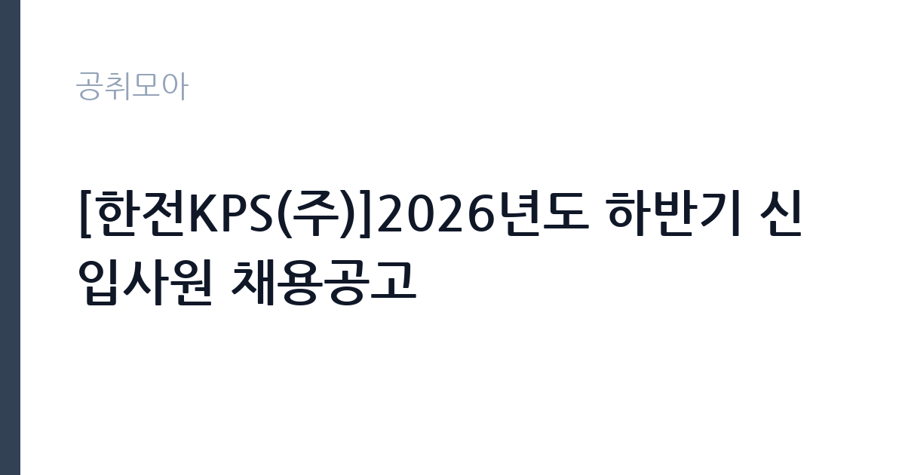

[공공기관] [한전KPS(주)]2026년도 하반기 신입사원 채용공고
한전KPS(주) · 서울 · 마감 2026-10-28 (D-15) · 출처 잡알리오

한눈에 보는 모집 조건
| 기관 | 한전KPS(주) |
|---|---|
| 공고명 | [한전KPS(주)]2026년도 하반기 신입사원 채용공고 |
| 고용형태 | 정규직 |
| 근무지 | 서울 |
| 게시일 | 2026-10-13 |
| 마감일 | 2026-10-28 (D-15) |
지원자격, 이렇게 읽으세요
- 공공기관 채용공시
- 세부 조건은 원문 공고문 확인
등급별로 요구 조건이 뚜렷하게 갈립니다. G4 일반전형은 관련 분야 기사 이상 자격과 토익 700점 이상이 필요하고, G3 일반·지역전형은 산업기사 이상과 토익 500점 이상이 기준입니다. G2는 고등학교 졸업(예정)자로 문이 열려 있으며 기능사 이상 자격을 요구합니다. G3 지역전형은 해당 지역 근무 희망자만 지원하실 수 있으니, 연고지와 정주 계획을 먼저 점검하시기 바랍니다. 어학 성적은 유효기간과 기준 점수를 원문에서 반드시 대조하시기 바랍니다.
이 공고의 포인트
첫 번째 포인트는 채용 규모와 직무의 전문성입니다. 한전KPS는 발전설비 정비를 전담하는 한국전력의 자회사로, 기계·전기·비파괴 분야 실무 경험이 곧바로 시장 가치로 이어지는 구조입니다. 두 번째로 G2부터 G4까지 학력·자격 스펙트럼이 넓어 고졸 기능사부터 기사 보유자까지 각자의 구간에서 지원하실 수 있습니다. 세 번째로 지역전형이 별도로 운영되어 연고 지역 근무를 희망하는 수험생에게는 경쟁 부담을 낮출 기회가 됩니다.
전형은 어떻게 진행되나
전형은 서류전형, 필기전형, 면접전형 순으로 진행되는 것이 일반적이며, 회차별 세부 일정과 배점은 원문 공고문과 첨부파일에서 확인하시기 바랍니다. 서류에서는 자격·어학 등 정량 요건 충족 여부가 먼저 가려지므로, 자격증 사본과 어학 성적의 유효 여부를 접수 전에 점검하시기 바랍니다. 필기는 NCS 직업기초능력과 직무 전공으로 구성되는 흐름이므로, 기계·전기 전공자는 전공 이론을, 사무 분야는 관련 법규와 회계 기초를 정리해 두시기 바랍니다.
원문에서 확인한 전형 방식
○경영·회계·사무(G4_일반)_전산 : 관련 분야 기사, 기술사 등 자격·면허 소지자, 어학 토익 700점 이상 ○발전설비운영(G4_일반)_기계, 전기 : 관련 분야 기사, 기술사 등 자격·면허 소지자, 어학 토익 700점 이상 ○발전설비운영(G3_일반)_기계, 전기, 비파괴 : 관련 분야 산업기사 이상 자격·면허 소지자, 어학 토익 500점 이상 ○발전설비운영(G3_지역)_기계, 전기 : 관련 분야 산업기사 이상 자격·면허 소지자, 어학 토익 500점 이상, 해당 지역 근무 희망자 ○발전설비운영(G2_일반)_기계, 전기 : 최종학력이 고등학교 졸업한 자 또는 졸업예정자, 관련 분야 기능사 이상 자격·면허 소지자 - 보다 자세한 사항은 첨부파일의 채용공고문 참조
이런 분께 추천해요
- 발전소 정비·운영 현장에서 기계·전기 실무 경력을 쌓고 싶은 취업준비생
- 기사 또는 산업기사 자격과 토익 기준 점수를 이미 갖춘 공기업 준비생
- 연고 지역에서 장기 근무를 희망하며 지역전형에 지원하려는 구직자
지원 전 체크리스트
- 본인의 자격증이 모집 분야의 인정 자격군에 들어가는지 원문 대조
- 토익 등 어학 성적의 유효기간과 등급별 기준 점수 확인
- G3 지역전형 지원 시 해당 지역 근무 가능 여부와 거주 요건 확인
- 첨부파일 채용공고문의 결격사유와 제출 서류 목록 점검
모집 일정과 제출 타이밍
접수는 2026년 10월 13일 게시 이후 10월 28일에 마감됩니다. 이후 서류전형 합격자 발표, 필기전형, 면접전형, 신체검사와 임용 순으로 이어지는 것이 일반적이며, 전형별 확정 일정은 한전KPS 채용 홈페이지(kps.saramin.co.kr)의 원문에서 확인하시기 바랍니다. 마감일에는 접속이 몰릴 수 있으니 접수와 서류 제출은 마감 하루 전까지 마치시는 것을 권합니다.
직무 이해하기: 공공기관
발전설비운영 직무는 화력·원자력 발전소의 설비를 점검·정비·운영하는 실무를 담당합니다. 기계 분야는 터빈·보일러·펌프류 설비의 분해 점검과 예방 정비를, 전기 분야는 발전기·변압기·보호계전 계통의 시험과 관리를 맡습니다. 비파괴 분야는 초음파·방사선투과 검사를 통해 설비 결함을 사전에 찾아내는 진단을 수행합니다. 경영·회계·사무와 전산 분야는 본사와 사업소의 기획·재무·정보시스템 운영을 지원합니다.
자기소개서 작성 팁
자기소개서는 해당 등급에서 요구하는 자격 취득 과정과 실습·현장 경험을 연결해서 쓰시는 것이 좋습니다. 기능사·산업기사·기사 실기 과정에서 다룬 설비나 공정을 구체적으로 언급하면 직무 이해를 보여줄 수 있습니다. 지역전형 지원자는 해당 지역과의 연고와 장기 근무 의지를 근거 있게 서술하시기 바랍니다. 토익 점수는 단순 나열이 아니라, 발전 분야 영문 매뉴얼을 읽고 실무에 활용한 경험과 묶으면 설득력이 높아집니다.
면접 준비 포인트
면접에서는 발전설비 정비 직무에 대한 이해와 안전의식을 중점적으로 확인하는 흐름입니다. 정전·설비 고장 같은 돌발 상황에 어떻게 대응할지 묻는 질문에는 절차 준수와 보고 체계를 먼저 언급하시기 바랍니다. 한전KPS가 수행하는 계획예방정비와 경상정비의 차이를 정리해 두시면 전공 질문에 대비하실 수 있습니다. 마지막으로 본사 이전 지역과 전국 사업소 순환근무 가능성을 염두에 두고 근무 포부를 정리하시기 바랍니다.
급여·근무조건 읽는 법
보수는 원문 공고의 보수표에서 확인하시기 바랍니다. 참고로 외부 취업정보(자소설 기업정보)에 따르면 한전KPS의 신입사원 연봉은 약 4,429만원 내외로 안내되어 있으며 직무에 따라 차이가 있습니다. 평균연봉은 약 8,802만원, 매출액 1조 5,453억원, 평균 근속연수 14.3년으로 안내되어 있습니다(캐치 기업정보 기준). 기본급과 각종 수당·성과급의 구성은 등급과 호봉에 따라 달라지므로, 확정 수치는 원문과 알리오 경영공시를 대조하시기 바랍니다.
자주 묻는 질문
- 고졸도 지원할 수 있나요?
G2 전형은 최종학력이 고등학교 졸업(예정)자인 분을 대상으로 하며, 관련 분야 기능사 이상 자격을 요구합니다. 세부 인정 자격은 원문의 첨부파일에서 확인하시기 바랍니다. - 지역전형과 일반전형의 차이는 무엇인가요?
G3 지역전형은 해당 지역 근무 희망자를 대상으로 하며, 일반전형과 모집 단위가 분리되어 있습니다. 근무지와 전보 조건은 원문에서 확인하시기 바랍니다. - 어학 성적 없이 지원할 수 있나요?
G4는 토익 700점 이상, G3는 토익 500점 이상이 명시되어 있어 기준 미달 시 지원이 어렵습니다. 인정되는 어학 시험의 종류와 환산 기준은 원문에서 확인하시기 바랍니다.
함께 보면 좋은 공고
[공공기관] [직원채용] 무기계약직 연구기술직(방사선융복합연구팀) 공개 채용(재공고) — 마감 2026-10-27[공공기관] 단시간제(편의시설 점원) 채용공고 — 마감 2026-10-20[공공기관] [김해보훈요양원] 2026년 6차 요양보호직 채용공고 — 마감 2026-10-28출처: 잡알리오 공개정보를 바탕으로 공취모아가 정리한 안내글입니다. 모집 조건·일정은 변경될 수 있으니 지원 전 반드시 원문 공고문을 확인하세요. 본 글은 정보 제공용이며 합격을 보장하지 않습니다.